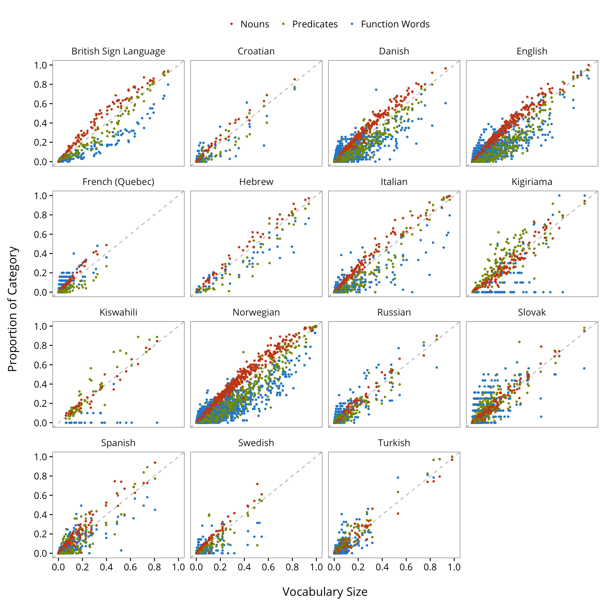
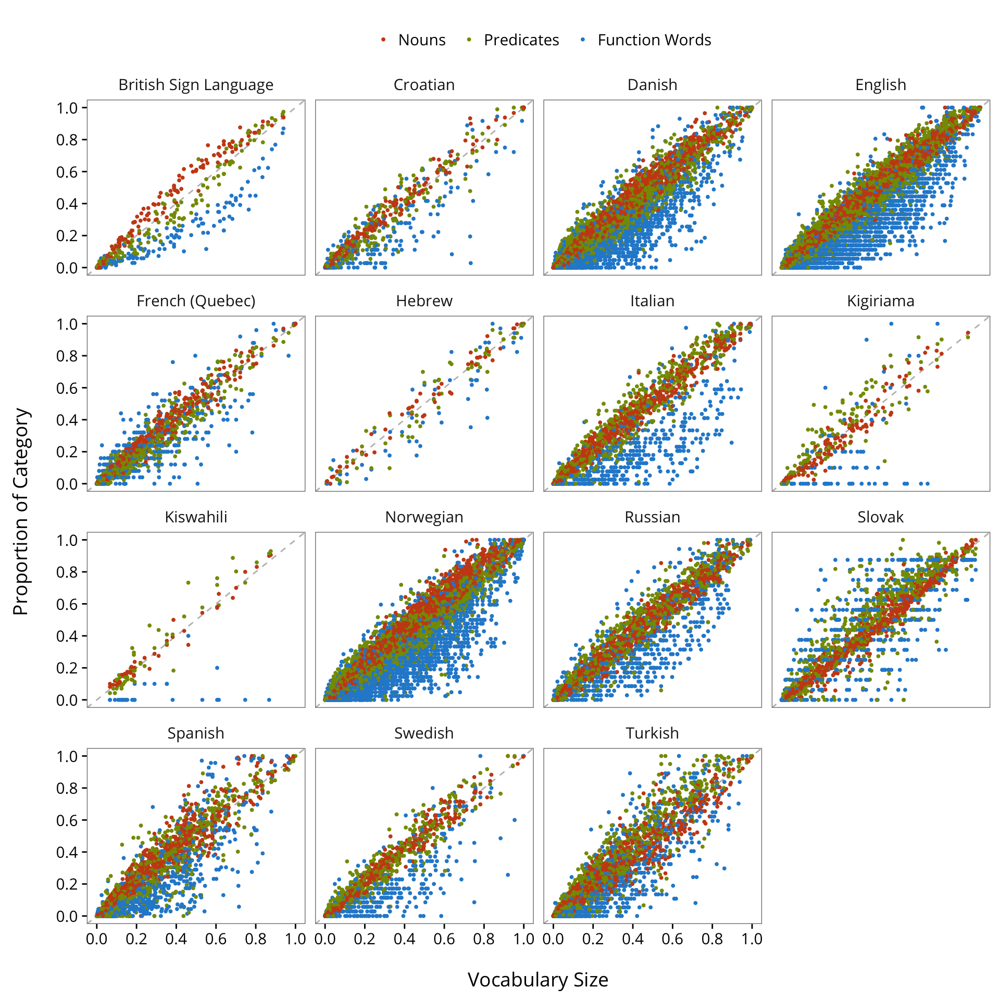
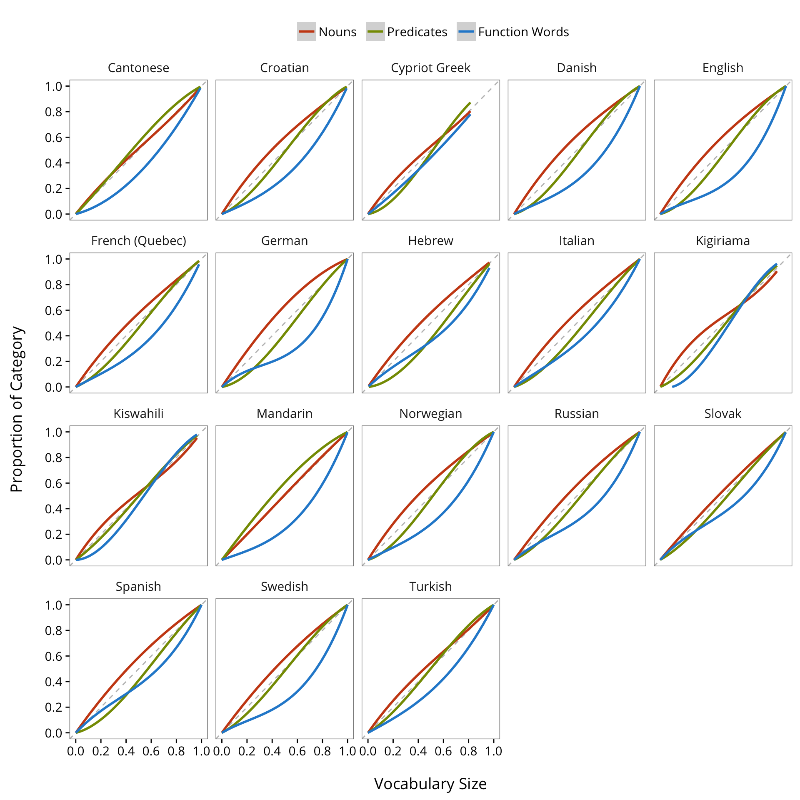
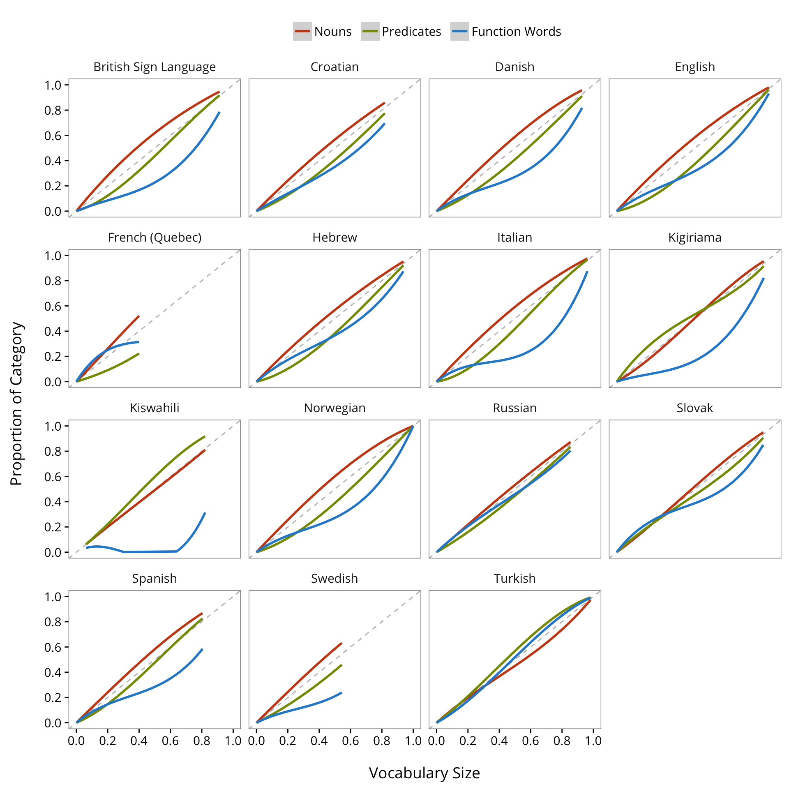
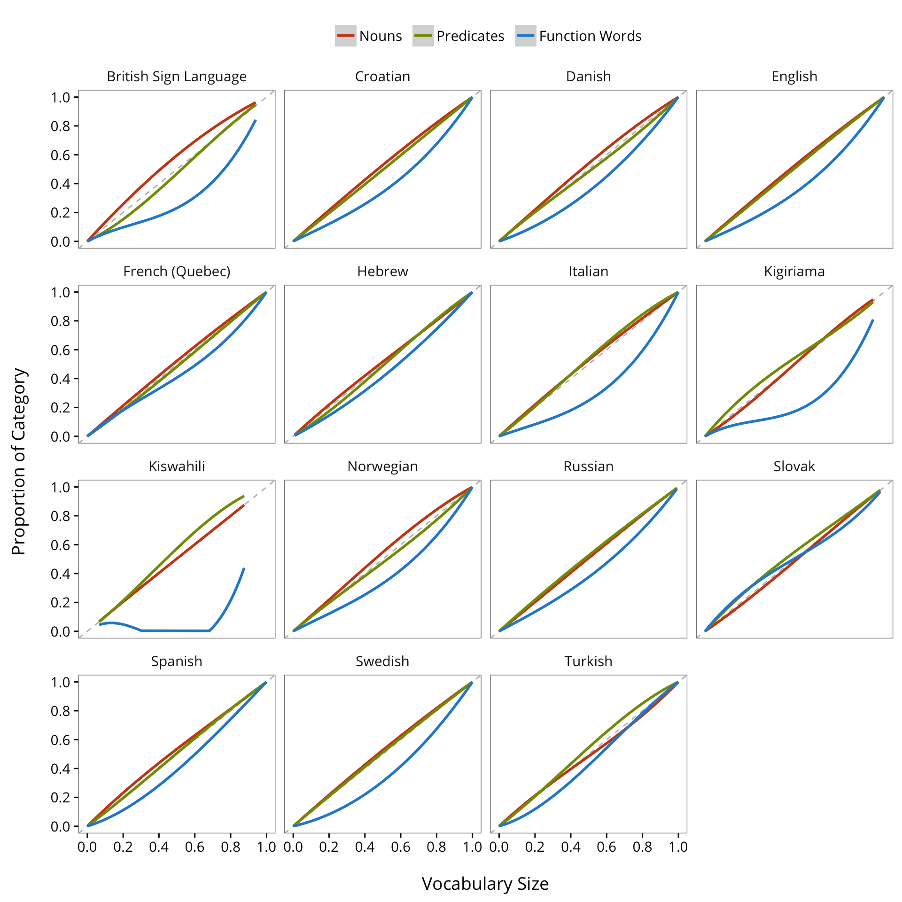
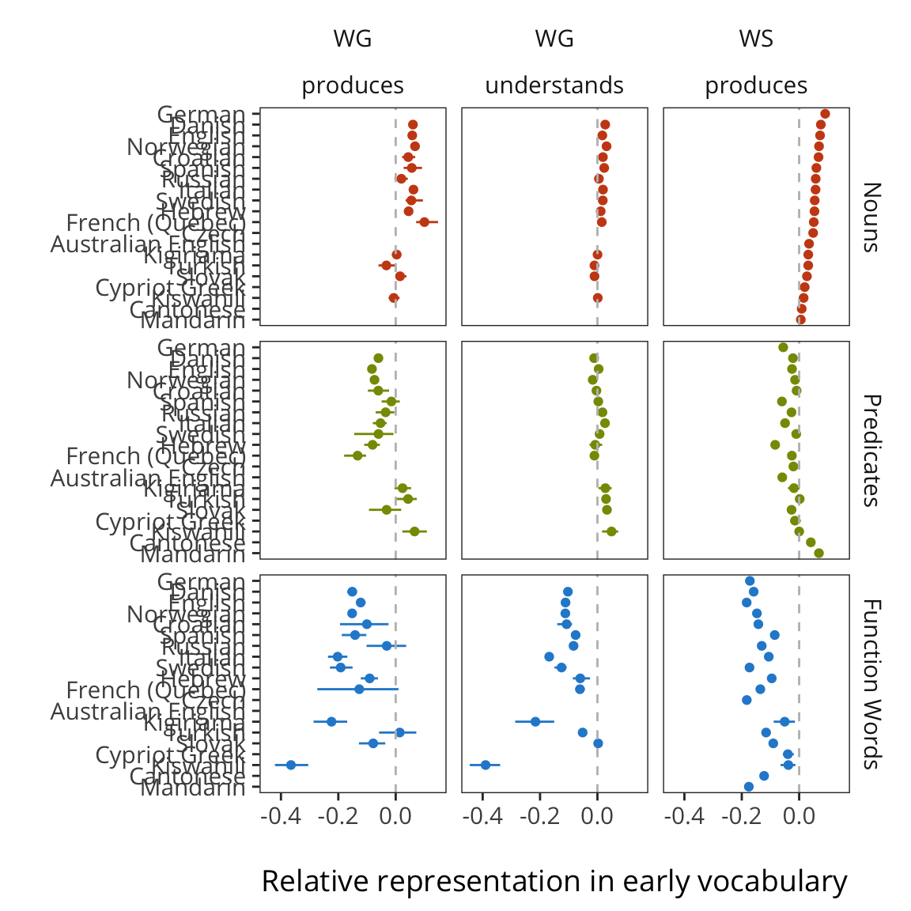
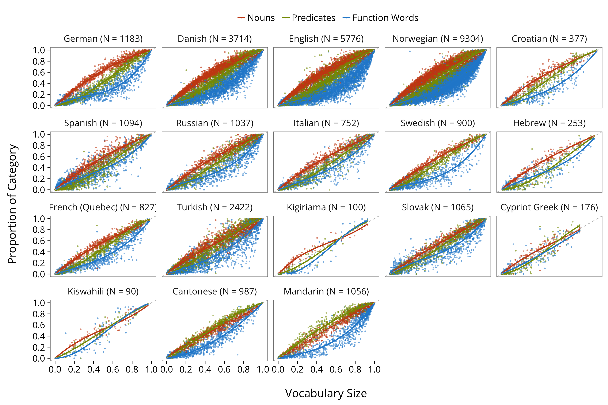
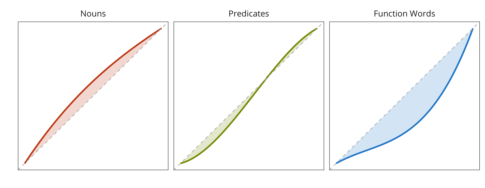
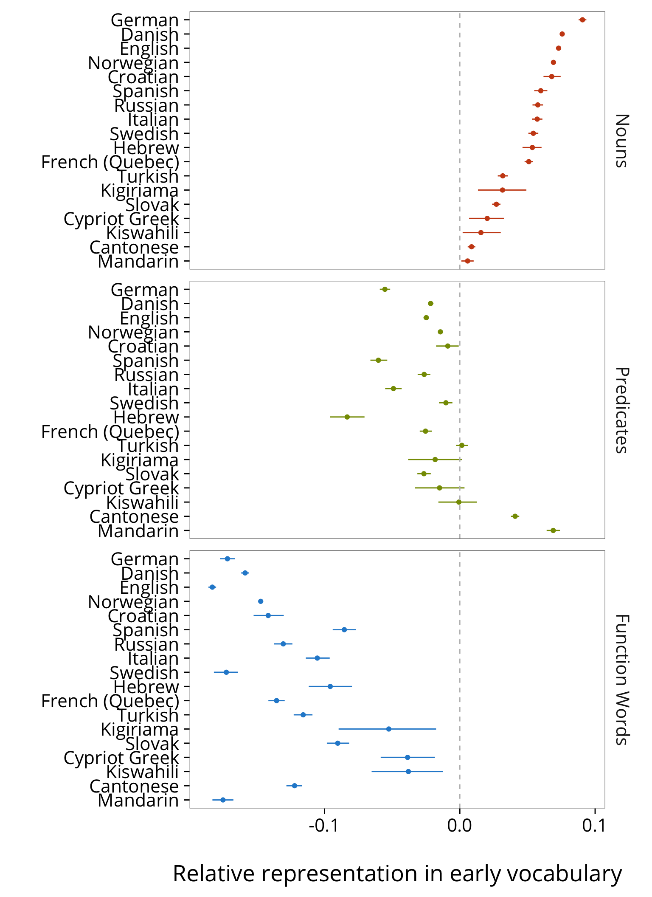

4 The Categorical Composition of Early Vocabulary
Breaking down vocab by lexical category (and other things?)
4.1 Semantic Category Representation
4.2 Lexical Category Representation
This work was reported to BUCLD 2015 by Braginsky et al.
Load in Wordbank data.
items <- get_item_data() %>%
filter(type == "word") %>%
mutate(num_item_id = as.numeric(substr(item_id, 6, nchar(item_id))))Function for getting vocabulary composition data for a given instrument.
get_vocab_comp <- function(input_language, input_form) {
print(paste(input_language,input_form))
lang_vocab_items <- filter(items, language == input_language,
form == input_form) %>%
filter(lexical_category %in% c("nouns", "predicates", "function_words"))
lang_vocab_data <- get_instrument_data(instrument_language = input_language,
instrument_form = input_form,
items = lang_vocab_items$item_id,
iteminfo = lang_vocab_items) %>%
mutate(value = ifelse(is.na(value), "", value),
produces = value == "produces",
understands = value == "produces" | value == "understands") %>%
select(-value) %>%
gather(measure, value, produces, understands)
num_words <- nrow(lang_vocab_items)
lang_vocab_summary <- lang_vocab_data %>%
group_by(data_id, measure, lexical_category) %>%
summarise(num_true = sum(value),
prop = sum(value) / n())
lang_vocab_sizes <- lang_vocab_summary %>%
summarise(vocab_num = sum(num_true),
vocab = sum(num_true) / num_words)
lang_vocab_summary %>%
left_join(lang_vocab_sizes) %>%
mutate(prop_vocab = num_true / vocab_num) %>%
select(-num_true) %>%
mutate(language = input_language, form = input_form)
}Get vocabulary composition data for all instruments. (Limiting to traditional WS/WG for now because short forms like TEDS don’t have category information.
instruments <- items %>%
filter(form %in% c("WS","WG")) %>%
select(language, form) %>%
distinct()
vocab_comp_data <- map2(instruments$language,
instruments$form, get_vocab_comp) %>%
bind_rows()
#> [1] "Croatian WG"
#> [1] "Croatian WS"
#> [1] "German WS"
#> [1] "Russian WG"
#> [1] "Russian WS"
#> [1] "Swedish WG"
#> [1] "Swedish WS"
#> [1] "Turkish WG"
#> [1] "Turkish WS"
#> [1] "Danish WG"
#> [1] "French (Quebec) WG"
#> [1] "English WG"
#> [1] "Spanish WG"
#> [1] "Italian WS"
#> [1] "English WS"
#> [1] "Spanish WS"
#> [1] "Norwegian WG"
#> [1] "Norwegian WS"
#> [1] "Cantonese WS"
#> [1] "Mandarin WS"
#> [1] "Italian WG"
#> [1] "Danish WS"
#> [1] "Hebrew WG"
#> [1] "British Sign Language WG"
#> [1] "Hebrew WS"
#> [1] "French (Quebec) WS"
#> [1] "Slovak WG"
#> [1] "Slovak WS"
#> [1] "Cypriot Greek WS"
#> [1] "Kigiriama WG"
#> [1] "Kigiriama WS"
#> [1] "Kiswahili WG"
#> [1] "Kiswahili WS"Show sample size of each instrument.
sample_sizes <- vocab_comp_data %>%
group_by(language, form, measure, lexical_category) %>%
summarise(n = n()) %>%
ungroup() %>%
select(language, form, n) %>%
distinct()Base plot for looking at vocabulary composition.
base_plot <- function(input_form, input_measure) {
vocab_comp_data %>%
filter(form == input_form, measure == input_measure) %>%
mutate(lexical_category = factor(lexical_category,
levels = c("nouns", "predicates", "function_words"),
labels = c("Nouns ", "Predicates ", "Function Words"))) %>%
ggplot(aes(x = vocab, y = prop, colour = lexical_category)) +
facet_wrap(~language) +
geom_abline(slope = 1, intercept = 0, color = "gray", linetype = "dashed") +
scale_y_continuous(limits = c(0, 1), breaks = seq(0, 1, 0.2),
name = "Proportion of Category\n") +
scale_x_continuous(limits = c(0, 1), breaks = seq(0, 1, 0.2),
name = "\nVocabulary Size") +
scale_colour_solarized(name = "") +
theme(legend.position = "top",
legend.key = element_blank(),
legend.background = element_rect(fill = "transparent"))
}Plot WS productive vocabulary composition as a function of vocabulary size for each language.
base_plot("WS", "produces") + geom_jitter(size = 0.7)
Plot WG productive vocabulary composition as a function of vocabulary size for each language.
base_plot("WG", "produces") + geom_jitter(size = 0.7)
Plot WG receptive vocabulary composition as a function of vocabulary size for each language.
base_plot("WG", "understands") + geom_jitter(size = 0.7)
Plot WS productive vocabulary composition as a function of vocabulary size for each language with cubic contrained lm curves.
base_plot("WS", "produces") +
geom_smooth(method = "clm", formula = y ~ I(x ^ 3) + I(x ^ 2) + x - 1)
Plot WG productive vocabulary composition as a function of vocabulary size for each language with cubic contrained lm curves.
base_plot("WG", "produces") +
geom_smooth(method = "clm", formula = y ~ I(x ^ 3) + I(x ^ 2) + x - 1)
Plot WG receptive vocabulary composition as a function of vocabulary size for each language with cubic contrained lm curves.
base_plot("WG", "understands") +
geom_smooth(method = "clm", formula = y ~ I(x ^ 3) + I(x ^ 2) + x - 1)
Function for resampling data and computing area estimate for each sample.
sample_areas <- function(d, nboot = 1000) {
poly_area <- function(group_data) {
model = clm(prop ~ I(vocab ^ 3) + I(vocab ^ 2) + vocab - 1,
data = group_data)
return((model$solution %*% c(1/4, 1/3, 1/2) - 0.5)[1])
}
counter <- 1
sample_area <- function(d) {
d_frame <- d %>%
group_by(language, form, measure) %>%
sample_frac(replace = TRUE) %>%
group_by(language, form, measure, lexical_category) %>%
do(area = poly_area(.)) %>%
mutate(area = area[1]) %>%
rename_(.dots = setNames("area", counter))
counter <<- counter + 1 # increment counter outside scope
return(d_frame)
}
areas <- replicate(nboot, sample_area(d), simplify = FALSE)
Reduce(left_join, areas) %>%
gather(sample, area, -language, -form, -measure, -lexical_category)
}Resample data and find the mean and CI of the area estimate.
areas <- sample_areas(vocab_comp_data, 1000)
area_summary <- areas %>%
group_by(language, form, measure, lexical_category) %>%
summarise(mean = mean(area),
ci_lower = ci_lower(area),
ci_upper = ci_upper(area)) %>%
ungroup() %>%
mutate(language = factor(language),
instrument = paste(language, form))
area_order <- filter(area_summary, form == "WS", measure == "produces",
lexical_category == "nouns")
language_levels <- area_order$language[order(area_order$mean,
area_order$language,
decreasing = FALSE)]
area_summary_ordered <- area_summary %>%
filter(form %in% c("WS", "WG"),
!(form == "WS" & measure == "understands")) %>%
ungroup() %>%
mutate(language = factor(language, levels = language_levels),
lexical_category = factor(lexical_category,
levels = c("nouns", "predicates", "function_words"),
labels = c("Nouns", "Predicates", "Function Words")))Plot each lexical category’s area estimate by language, form, and measure.
ggplot(area_summary_ordered,
aes(y = language, x = mean, colour = lexical_category)) +
facet_grid(lexical_category ~ form + measure) +
geom_point() +
geom_segment(aes(x = ci_lower, xend = ci_upper,
y = language, yend = language)) +
geom_vline(xintercept = 0, linetype = "dashed", color = "gray") +
scale_colour_solarized(name = "", guide = FALSE) +
scale_y_discrete(name = "", limits = levels(area_summary_ordered$language)) +
xlab("\nRelative representation in early vocabulary")
4.3 Plots for BUCLD poster
Data and models.
sample_sizes_ordered <- sample_sizes %>%
filter(form == "WS") %>%
mutate(language = factor(language, levels = rev(language_levels)))
language_size_order <- unlist(map(
levels(sample_sizes_ordered$language),
function(language) sprintf("%s (N = %s)", language,
sample_sizes_ordered$n[which(sample_sizes_ordered$language == language)])
))
vocab_comp_data_ordered <- vocab_comp_data %>%
filter(form == "WS", measure == "produces") %>%
mutate(language = factor(language, levels = rev(language_levels)),
lexical_category = factor(lexical_category,
levels = c("nouns", "predicates", "function_words"),
labels = c("Nouns ", "Predicates ", "Function Words"))) %>%
left_join(sample_sizes_ordered) %>%
mutate(language_with_size = sprintf("%s (N = %s)", language, n),
language_with_size = factor(language_with_size, levels = language_size_order))
ggplot(vocab_comp_data_ordered, aes(x = vocab, y = prop, colour = lexical_category)) +
facet_wrap(~language_with_size, ncol = 5) +
geom_jitter(size = 0.7, alpha = 0.5) +
geom_smooth(method = "clm", formula = y ~ I(x ^ 3) + I(x ^ 2) + x - 1, size = 1, se = FALSE) +
geom_abline(slope = 1, intercept = 0, color = "gray", linetype = "dashed") +
scale_y_continuous(limits = c(0, 1), breaks = seq(0, 1, 0.2),
name = "Proportion of Category\n") +
scale_x_continuous(limits = c(0, 1), breaks = seq(0, 1, 0.2),
name = "\nVocabulary Size") +
scale_colour_solarized(name = "") +
theme_mikabr(base_size = 20) +
theme(legend.position = "top",
legend.key = element_blank(),
legend.background = element_rect(fill = "transparent"))
#ggsave("BUCLD/data_models.png", width = 15, height = 10)
Demo of area estimation.
demo_langs <- c("English", "Mandarin")
demo_data <- filter(vocab_comp_data, form == "WS", language %in% demo_langs) %>%
mutate(panel = paste(language, "(data)"),
lexical_category = factor(lexical_category,
levels = c("nouns", "predicates", "function_words"),
labels = c("Nouns", "Predicates", "Function Words")))
pts <- seq(0, 1, 0.01)
models <- demo_data %>%
group_by(language, lexical_category) %>%
do(model = clm(prop ~ I(vocab ^ 3) + I(vocab ^ 2) + vocab - 1, data = .))
get_lang_lexcat_predictions <- function(lang, lexcat) {
model <- filter(models, language == lang, lexical_category == lexcat)$model[[1]]
data.frame(vocab = pts,
prop = predict(model, newdata = data.frame(vocab = pts)),
lexical_category = lexcat,
language = lang)
}
get_lang_predictions <- function(lang) {
bind_rows(sapply(unique(demo_data$lexical_category),
function(lexcat) get_lang_lexcat_predictions(lang, lexcat),
simplify = FALSE))
}
predictions <- bind_rows(sapply(demo_langs, get_lang_predictions, simplify = FALSE))
diagonal <- expand.grid(vocab = rep(rev(pts)),
language = demo_langs,
lexical_category = unique(demo_data$lexical_category))
diagonal$prop <- diagonal$vocab
area_poly <- bind_rows(predictions, diagonal) %>%
mutate(panel = paste(language, "(models)"))
ggplot(filter(predictions, language == "English"), aes(x = vocab, y = prop)) +
facet_grid(. ~ lexical_category) +
geom_line(aes(colour = lexical_category), size = 1) +
geom_polygon(data = filter(area_poly, language == "English"),
aes(fill = lexical_category), alpha = 0.2) +
geom_abline(slope = 1, intercept = 0, color = "gray", linetype = "dashed") +
scale_y_continuous(limits = c(0, 1), breaks = c(),
name = "") +
scale_x_continuous(limits = c(0, 1), breaks = c(),
name = "") +
scale_colour_solarized(guide = FALSE) +
scale_fill_solarized(guide = FALSE) +
theme(legend.position = c(0.061, 0.91),
legend.text = element_text(size = 8),
legend.key.height = unit(0.9, "char"),
legend.key.width = unit(0.88, "char"),
legend.background = element_rect(fill = "transparent"),
strip.background = element_blank(),
strip.text.x = element_blank())
#ggsave("BUCLD/area_demo.png", width = 9, height = 3.5)
WS area estimates.
ggplot(filter(area_summary_ordered, form == "WS"),
aes(y = language, x = mean, col = lexical_category)) +
facet_grid(lexical_category ~ .) +
geom_point() +
geom_segment(aes(x = ci_lower, xend = ci_upper,
y = language, yend = language)) +
geom_vline(xintercept = 0, linetype = "dashed", color = "gray") +
scale_colour_solarized(name = "", guide = FALSE) +
scale_y_discrete(name = "", limits = levels(area_summary_ordered$language)) +
xlab("\nRelative representation in early vocabulary") +
theme_mikabr(base_size = 20)
#ggsave("BUCLD/diffs.png", width = 8, height = 11)